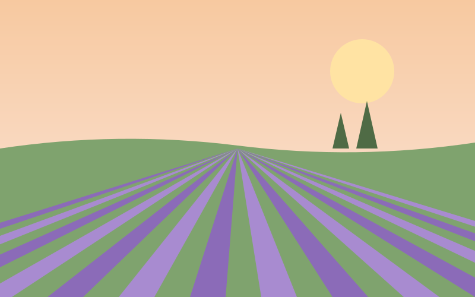

La Marina
Foundation
Shape
Shape makes Saturdaze feel soft and consistent: pill controls, rounded surfaces that grow with their size, and edges whose width says whether they matter.
Overview
Shape in Saturdaze is soft: pill controls, rounded cards and dialogs, and thin edges. Six radii and three stroke widths cover every surface in the mocks.
- Radius grows with size: pills for controls, 12px inside cards, 16px for cards, 22px for dialogs, 8px for thumbnails.
- Stroke width carries meaning: 1px to separate, 2px for focus and state, 3px for a halo.
- Dashed means add: the ghost row and the upload drop.
Radius scale
Six radii. Saturdaze is soft and rounded on purpose: a family app, not a spreadsheet. The radius grows with the size of the thing, so a pill button, a 16px card and a 22px dialog all look like they belong together.
NoneSmallMediumLargeXLargeCircularWhich radius for which size
Pick the radius by what the element is and how big it is:
| Radius | For | Examples |
|---|---|---|
| Circular (pill) | Controls a finger presses and small tags | Buttons at every size, chips and filter chips, segment tracks and tabs, avatars, discs, the switch, progress bars, the floating bottom nav |
| Medium · 12px | Things that sit inside a card or a dialog | Text fields and selects, wells and banners, menu items, media frames, photo picks, the ghost row, the upload drop, copy fields |
| Large · 16px | Surfaces that hold content | Cards, card lists, the map, menus, toasts, tables, the cover photo, the browser frame |
| XLarge · 22px | Large single surfaces a family focuses on | Dialogs (top corners only as a phone sheet), the auth card, empty states, the landing hero |
| Small · 8px | Small images and tight overlays | Itinerary and place thumbnails (72 × 54px), tooltips, skeleton lines, the brand mark, focus boxes on inline links |
| None | Edges that meet the screen | A full-bleed page banner (.banner--page) |
Nested corners stay concentric. An inner element's radius is the outer radius minus the padding between them, rounded to the scale: a menu (16px) with 6px padding holds 12px items; a pill segment track holds pill tabs; a 16px card holds 12px wells and media.
Outdoor

Pill button and chip, 12px field, 8px thumbnail, 16px card.
Stroke widths
Three stroke widths. Width says how much the edge matters: 1px separates, 2px marks a state, 3px is a soft halo around something in focus or chosen.
| Token | Width | Used for |
|---|---|---|
--strokeWidthThin | Every resting edge: cards, inputs, dividers, the quiet button, menus, tables, the dashed add rows | |
--strokeWidthThick | The focus outline; a locked card (forest) or a selected card (coral); the current-page underline; the small spinner; the dotted travel leg | |
--strokeWidthThicker | The halo around a focused field; the selected photo's inset ring; the hover halo on an avatar or switch; the large spinner |
Lunch at La Marina
Swim lessons
Lavender fields
A locked or selected card trims 1px of padding so the thicker edge does not shift its content.
Dashed strokes
A dashed edge means "something can go here". It appears in two places, both with the 1px accessible stroke (--colorNeutralStrokeAccessible) so the outline passes 3:1, and both at 12px radius:
- Ghost row at the end of a day: "Add an errand". It is a link or button that opens a dialog, not an inline form.
- Upload drop in photo dialogs: "Choose a photo". It turns coral and solid-tinted while a file is dragged over it.
The compact empty state uses a decorative dashed edge (--colorNeutralStroke1) to show an empty slot; it is not interactive, so it is exempt from 3:1. Nothing else is dashed: a dashed card or field reads as "not finished".
Ghost row and upload drop: 1px dashed accessible stroke, 12px radius.
Usage
- Radius by role. Use the table above; do not pick a radius because it looks nice on one screen. A new surface the size of a card is 16px.
- Controls are pills. Anything pressed with a finger (buttons, chips, segments) is fully round; fields are 12px so they read as containers for text, not as buttons.
- Concentric nesting. Inner radius equals outer radius minus padding, snapped to the scale.
- Phone sheets round the top only. A dialog below 720px is a bottom sheet with 22px top corners; from 720px all four corners round.
- Stroke width carries state. 1px rests, 2px is locked, selected or focused, 3px is a halo. Never use a 2px edge decoratively, or it will read as selected.
- Dashed means add. Only the ghost row and the upload drop are dashed and interactive.
Church
Church
Accessibility
- Shape never carries state alone. A selected or locked card changes border colour and width and also says so in text or a chip; a pressed filter chip changes fill, text colour and edge (D26).
- Edges that matter pass 3:1. Input borders, the quiet button, the switch track and the dashed add rows use the accessible stroke (1.4.11; the quiet button: D28); 1px card edges are decorative.
- Focus is 2px with a 2px offset, so it sits outside rounded corners and never overlaps content; the 3px field halo is extra, on top of the 2px focus border.
- Forced colours keep borders and outlines (as system colours) but drop fills and shadows, so every control that relies on a border keeps its outline there.
- Round corners do not shrink targets. Hit areas are the full box, including corners; a 24px pill still has a 24px target.
Tokens
| Part | Token | Light | Dark |
|---|---|---|---|
| Radius | |||
| Full-bleed page banners, table cells | --borderRadiusNone | ||
| Thumbnails, tooltips, skeleton lines, the brand mark, the focus box of text links | --borderRadiusSmall | ||
| Inputs, wells, banners, menu items, media frames, photo picks, ghost rows, code | --borderRadiusMedium | ||
| Cards, lists, maps, menus, toasts, tables, the cover photo | --borderRadiusLarge | ||
| Dialogs, the auth card, empty states, the landing hero | --borderRadiusXLarge | ||
| Buttons, chips, filter chips, segments, avatars, discs, the switch, the bottom nav | --borderRadiusCircular | ||
| Stroke width | |||
| Resting edges, dividers | --strokeWidthThin | ||
| Focus, locked, selected, current-page underline | --strokeWidthThick | ||
| Focus halo, selected photo, hover halo | --strokeWidthThicker | ||
Sources and drift
Extracted from styles/tokens.css (--sd-r-*) and the border rules in styles/app.css, checked on pages/weekend, pages/dialogs, pages/ideas, pages/admin.place and pages/sign-in.
| Mock | System | Drift |
|---|---|---|
--sd-r-sm/md/lg/xl/pill 8 / 12 / 16 / 22 / 999px | --borderRadiusSmall/Medium/Large/XLarge/Circular | Same values; rem except the pill |
| Raw 1, 2 and 3px borders and box-shadow rings | --strokeWidthThin/Thick/Thicker | New tokens |
| Quiet-button edges at 16% ink | Same width, --colorNeutralStrokeAccessible | D28 |
| Pressed tinted filter chips with a pale fill only | Fill plus a 1px edge in the chip's text colour | D26 |
| Chip remove button 16 × 16px | 24px hit area via ::before; the glyph stays 16px | D27 |
--borderRadiusNone is new, for full-bleed banners.